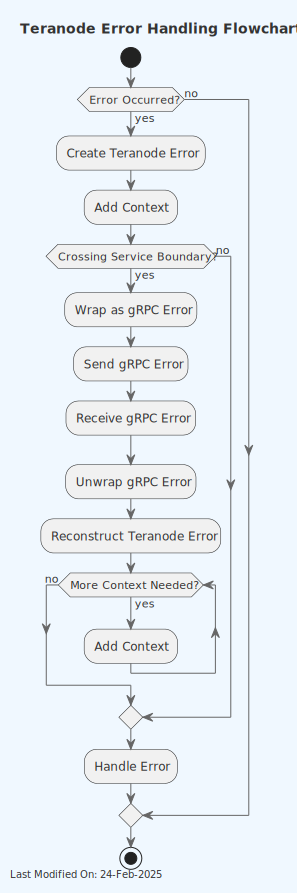

📘 Error Handling
Index
- Introduction
- Error Handling in Teranode
- 2.1. Error Handling Strategy
- 2.2. Sentinel Errors in Teranode
- 2.3. Error Wrapping in Teranode
- Error Creation and Wrapping
- Unwrapping Errors
- Best Practices for Error Wrapping
- 2.4. gRPC Error Wrapping in Teranode
- Converting Teranode Errors to gRPC Errors
- Converting gRPC Errors back to Teranode Errors
- Practical Example
- Best Practices
- 2.5. Extra Data in Error Handling
- Error Structure
- Purpose and Usage
- Example Implementation
- Type Assertions with Extra Data
- Usage Example
- Best Practices
- 2.6. Error Protobuf
- Error Protocol Definition
- Key Components
- Purpose and Benefits
- Integration with Teranode's Error Handling
- Best Practices
- 2.7. Unit Tests
1. Introduction
1.1. Go Errors
In Go (Golang), error handling is managed through an interface called error. This interface is defined in the built-in errors package.
The error interface in Go is defined as follows:
type error interface {
Error() string
}
Any type that implements this Error() string method satisfies the error interface. This "convention over configuration" approach encourages Go programs to handle errors explicitly by checking whether an error is nil before proceeding with normal operations.
Custom error types can be created by defining types that implement the error interface. This is useful for conveying error context or state beyond just a text message. Here’s a simple example:
type MyError struct {
Msg string
File string
Line int
}
func (e *MyError) Error() string {
return fmt.Sprintf("%s:%d: %s", e.File, e.Line, e.Msg)
}
Functions that can result in an error typically return an error object as their last return value. The calling function should always check this error before proceeding.
result, err := someFunction()
if err != nil {
// handle error
log.Fatal(err)
}
// proceed with using result
This pattern encourages handling errors at the place they occur, rather than propagating them up the stack implicitly via exceptions.
1.2. Go Errors: Best Practices
- Always check for errors where they might occur. Do not ignore returned error values or propagate them up.
- Consider defining your custom error types for complex systems, which can add clarity and control in error handling.
- Use standard
errors.Is(to check for a specific errors) anderrors.As(to check for type compatibility and type assertion). - Parsing the text of an error message to determine the type or cause of an error is considered an anti-pattern. Instead, use custom error types or error wrapping to provide context.
1.3. Sentinel Errors
Sentinel errors in Go are predefined error variables that represent specific error conditions. These are declared at the package level and used consistently throughout the code to signify particular states or outcomes. This pattern is useful for comparing returned errors to known values, providing a consistent method for error checking.
Since sentinel errors are variables, they can easily be compared using errors.Is() to check if a particular error has occurred.
Using sentinel errors keeps error handling simple and explicit, requiring only basic checks against predefined values.
Here's a basic example of defining and using sentinel errors in a Go program:
package main
import (
"errors"
"fmt"
)
// Define sentinel errors
var (
ErrNotFound = errors.New("not found")
ErrPermissionDenied = errors.New("permission denied")
)
func findItem(id string) error {
// Simulated condition: item not found
if id != "expected_id" {
return ErrNotFound
}
return nil
}
func main() {
err := findItem("unknown_id")
if errors.Is(err, ErrNotFound) {
fmt.Println("Item not found!")
} else if errors.Is(err, ErrPermissionDenied) {
fmt.Println("Access denied.")
} else if err != nil {
fmt.Println("An unexpected error occurred:", err)
} else {
fmt.Println("Item found.")
}
}
While useful, sentinel errors have limitations, especially as applications scale. Code that uses sentinel errors is tightly coupled to these errors, making changes to error definitions potentially disruptive.
1.4 Wrapping Errors
In Go, error wrapping is a technique used to add additional context to an error while preserving the original error itself. This approach helps maintain a "chain" of errors, which can be useful for debugging and error handling in complex microservices.
Example of wrapping an error:
package main
import (
"errors"
"fmt"
)
func operation1() error {
return errors.New("base error")
}
func operation2() error {
err := operation1()
if err != nil {
// Wrap the error with additional context
return fmt.Errorf("operation2 failed: %w", err)
}
return nil
}
func main() {
err := operation2()
if err != nil {
fmt.Println("An error occurred:", err)
}
}
On the other hand, unwrapping is the process of retrieving the original error from a wrapped error. You can unwrap errors manually using the Unwrap method provided by the errors package, or you can use higher-level utilities like errors.Is and errors.As to check for specific errors or extract errors of specific types.
In this context, errors.Is and errors.As are used to check errors in an error chain without needing to manually call Unwrap repeatedly
errors.Is: checks whether any error in the chain matches a specific error.errors.As: finds the first error in the chain that matches a specific type and provides access to it.
Benefits of Wrapping Errors:
- Wrapping errors helps in preserving the context where an error occurred, without losing information about the original error.
- Maintaining an error chain aids in diagnosing issues by providing a traceable path of what went wrong and where.
- Allows developers to decide how much error information to expose to different parts of the application or to the end user, enhancing security and usability.
2. Error Handling in Teranode
2.1. Error Handling Strategy
Teranode follows a structured error handling strategy that combines the use of predefined error types, error wrapping, and consistent error creation patterns. This approach ensures clear, consistent, and traceable error handling throughout the application.

The errors/Error.go file contains the core error type definition and functions for creating, wrapping, and unwrapping errors. The errors/Error_types.go file defines specific error types and provides functions for creating these errors.
An error in Teranode is defined as a struct containing an error code, a message, an optional wrapped error, and optional extra data:
type Error struct {
Code ERR
Message string
WrappedErr error
Data ErrData
}
The ERR type is an enum defined in the error.proto file, providing a standardized set of error codes across the system.
Teranode emphasizes the use of specific error creation functions for different error types. These functions are defined in Error_types.go and follow a naming convention of New<ErrorType>Error. For example:
func NewStorageError(message string, params ...interface{}) error {
return New(ERR_STORAGE_ERROR, message, params...)
}
These functions automatically handle error wrapping when an existing error is passed as the last parameter. They also support sprintf-style formatting for the error message. For instance:
err := errors.NewStorageError("failed to store block: %s", blockHash, existingErr)
This approach allows for consistent error creation, automatic error wrapping, and formatted error messages, enhancing the overall error handling strategy in Teranode.
2.2. Sentinel Errors in Teranode
Sentinel errors are predefined errors that serve as fixed references for common error conditions. They provide a standard and efficient way to recognize and manage common specific error scenarios.
Code Example:
The sentinel errors are defined in the errors/Error_types.go file, along with corresponding functions to create these errors:
package errors
var (
ErrUnknown = New(ERR_UNKNOWN, "unknown error")
ErrInvalidArgument = New(ERR_INVALID_ARGUMENT, "invalid argument")
ErrThresholdExceeded = New(ERR_THRESHOLD_EXCEEDED, "threshold exceeded")
ErrNotFound = New(ERR_NOT_FOUND, "not found")
// Other sentinel errors follow...
)
func NewUnknownError(message string, params ...interface{}) error {
return New(ERR_UNKNOWN, message, params...)
}
func NewInvalidArgumentError(message string, params ...interface{}) error {
return New(ERR_INVALID_ARGUMENT, message, params...)
}
func NewThresholdExceededError(message string, params ...interface{}) error {
return New(ERR_THRESHOLD_EXCEEDED, message, params...)
}
func NewNotFoundError(message string, params ...interface{}) error {
return New(ERR_NOT_FOUND, message, params...)
}
// Other error creation functions follow...
Each sentinel error is created using the New function, ensuring that each error has a unique code and a succinct message. The new error creation functions allow for more flexible error creation with custom messages and automatic error wrapping.
The sentinel errors are useful for error comparisons and decision-making in the Teranode business logic. By comparing returned errors to these predefined values, functions can determine the next steps without ambiguity.
How to Use Example:
When a function encounters an error, it can use the new error creation functions. Here's an example of how a function might use these errors:
package main
import (
"fmt"
"errors"
"github.com/your-project/errors" // Import your custom errors package
)
// Data represents a simple data structure
type Data struct {
ID string
}
// fetchData simulates fetching data and returning different types of errors
func fetchData(id string) (*Data, error) {
if id == "" {
return nil, errors.NewInvalidArgumentError("empty ID provided")
}
if id == "notfound" {
return nil, errors.NewNotFoundError("data not found for ID: %s", id)
}
// Simulate a wrapped error
if id == "dberror" {
dbErr := fmt.Errorf("database connection failed")
return nil, errors.NewStorageError("failed to fetch data", dbErr)
}
return &Data{ID: id}, nil
}
func main() {
// Example usage
ids := []string{"", "notfound", "dberror", "validid"}
for _, id := range ids {
data, err := fetchData(id)
if err != nil {
// Use errors.Is to check for specific error types
if errors.Is(err, errors.ErrInvalidArgument) {
fmt.Printf("Invalid argument error: %v\n", err)
} else if errors.Is(err, errors.ErrNotFound) {
fmt.Printf("Not found error: %v\n", err)
} else if errors.Is(err, errors.ErrStorageError) {
fmt.Printf("Storage error: %v\n", err)
// Use errors.As to get more details about the error
var storageErr *errors.Error
if errors.As(err, &storageErr) {
fmt.Printf("Storage error details - Code: %v, Message: %s\n",
storageErr.Code, storageErr.Message)
if storageErr.WrappedErr != nil {
fmt.Printf("Wrapped error: %v\n", storageErr.WrappedErr)
}
}
} else {
fmt.Printf("Unknown error: %v\n", err)
}
} else {
fmt.Printf("Data fetched successfully: %v\n", data)
}
fmt.Println()
}
}
2.3. Error Wrapping in Teranode
Error wrapping in Teranode enables the creation of nested errors and their propagation through different layers of the application. This mechanism allows an error to carry its history along with new context, effectively creating a chain of errors that leads back to the original issue.
By maintaining a trail of errors, developers can trace back through the execution flow to understand what led to the error. Additionally, different layers of the application can decide how to handle errors based on their type and origin.
Error Creation and Wrapping
The New function in Teranode's error package creates and returns a pointer to an Error struct, which includes fields for the error code, a message, and an optional wrapped error.
func New(code ERR, message string, params ...interface{}) *Error {
var wErr *Error
// Extract the wrapped error, if present
if len(params) > 0 {
if err, ok := params[len(params)-1].(*Error); ok {
wErr = err
params = params[:len(params)-1]
}
}
// Format the message with the remaining parameters
if len(params) > 0 {
message = fmt.Sprintf(message, params...)
}
// Check if the code exists in the ErrorConstants enum
if _, ok := ERR_name[int32(code)]; !ok {
return &Error{
Code: code,
Message: "invalid error code",
WrappedErr: wErr,
}
}
return &Error{
Code: code,
Message: message,
WrappedErr: wErr,
}
}
The New function operates as follows:
- It takes an error code, a message, and a variadic
paramsslice which may include one error to be wrapped. - If the last parameter in
paramsis an error, it's treated as the error to be wrapped. This error is stored in theWrappedErrfield of theErrorstruct. - Any additional parameters are used to format the message string using
fmt.Sprintf, allowing for dynamic message content based on runtime values.
Here's a practical example of using the New function to create and wrap errors:
func someOperation() error {
err := doSomethingThatMightFail()
if err != nil {
// Wrap the error with additional context and return
return New(ErrInvalidArgument, "operation failed due to underlying error: %v", err)
}
return nil
}
In this scenario, someOperation calls another function and wraps any error returned by this function with additional context, using the custom New function.
Unwrapping Errors
The Unwrap method in the Error structure returns the error that was wrapped within the current error, if any:
func (e *Error) Unwrap() error {
return e.WrappedErr
}
This method allows the use of Go's built-in errors.Unwrap function to continue unwrapping through multiple layers of nested wrapped errors.
To effectively utilize the unwrapping functionality, developers can use a loop or a conditional check to explore the chain of errors. Here's an example that demonstrates how to use the Unwrap method to trace back through wrapped errors:
// Assuming `someOperation` returns an error that may be wrapped multiple times
err := someOperation()
for err != nil {
fmt.Printf("Error encountered: %v\n", err)
// Attempt to unwrap the error
if unwrappedErr := errors.Unwrap(err); unwrappedErr != nil {
err = unwrappedErr
} else {
break
}
}
In this example, errors.Unwrap is used in a loop to keep unwrapping the error until no more wrapped errors are found, effectively reaching the original error. This approach is particularly useful when diagnosing an issue and understanding the sequence of errors that led to the final state.
Best Practices for Error Wrapping
- Unwrap errors only when necessary. For example, when handling specific error types differently, unwrap errors until finding the type you're looking for.
- Always log or monitor the full error chain before unwrapping in production environments to preserve the context and details of what went wrong.
- Use error wrapping to add context at each layer of the application, making it easier to trace the flow of execution that led to an error.
- When wrapping errors, include relevant information that might help in debugging, but be cautious not to include sensitive data.
2.4. gRPC Error Wrapping in Teranode
As a distributed system utilizing gRPC, Teranode implements a robust mechanism for wrapping and unwrapping errors to ensure consistent error handling practices when errors cross service boundaries.
Converting Teranode Errors to gRPC Errors
The WrapGRPC function in Error.go is responsible for converting Teranode's custom error types into gRPC-compatible errors. This function uses the status package from google.golang.org/grpc to create gRPC status errors.
package errors
import (
"google.golang.org/grpc/codes"
"google.golang.org/grpc/status"
"google.golang.org/protobuf/types/known/anypb"
)
func WrapGRPC(err error) error {
if err == nil {
return nil
}
var uErr *Error
if errors.As(err, &uErr) {
details, _ := anypb.New(&TError{
Code: uErr.Code,
Message: uErr.Message,
})
st := status.New(ErrorCodeToGRPCCode(uErr.Code), uErr.Message)
st, err := st.WithDetails(details)
if err != nil {
return status.New(codes.Internal, "error adding details to gRPC status").Err()
}
return st.Err()
}
return status.New(ErrorCodeToGRPCCode(ErrUnknown.Code), ErrUnknown.Message).Err()
}
The WrapGRPC function performs the following steps:
- If the input error is nil, it returns nil.
- It attempts to cast the error to Teranode's custom
Errortype. - If successful, it creates a new
TErrorwith the error's code and message. - It then creates a new gRPC status with the corresponding gRPC code and message.
- The
TErroris added as a detail to the gRPC status. - If the error is not a Teranode
Error, it creates a generic "unknown" gRPC error.
This process allows the receiving service to understand not only the nature of the error but also to receive contextual metadata.
Converting gRPC Errors back to Teranode Errors
When a Teranode service receives a gRPC error, it needs to convert it back into an internal error format. The UnwrapGRPC function in Error.go handles this process:
package errors
import (
"google.golang.org/grpc/status"
"google.golang.org/protobuf/proto"
"google.golang.org/protobuf/types/known/anypb"
)
func UnwrapGRPC(err error) error {
if err == nil {
return nil
}
st, ok := status.FromError(err)
if !ok {
return err // Not a gRPC status error
}
for _, detail := range st.Details() {
var teranodeErr TError
if err := anypb.UnmarshalTo(detail.(*anypb.Any), &teranodeErr, proto.UnmarshalOptions{}); err == nil {
return New(teranodeErr.Code, teranodeErr.Message)
}
}
return New(ErrUnknown.Code, st.Message())
}
The UnwrapGRPC function:
- Checks if the input is a gRPC status error.
- If it is, it iterates through the error details.
- It attempts to unmarshal each detail into a
TError. - If successful, it creates a new Teranode
Errorwith the extracted code and message. - If no matching detail is found, it creates a generic "unknown" Teranode error.
This process allows Teranode to reconstruct its internal error types from gRPC errors, preserving error context across service boundaries.
Practical Example
Here's an end-to-end example of how gRPC error wrapping and unwrapping works in Teranode:
- In the Blockchain Server, when processing a
GetBlockrequest:
blockHash, err := chainhash.NewHash(request.Hash)
if err != nil {
return nil, errors.WrapGRPC(errors.New(errors.ERR_BLOCK_NOT_FOUND, "[Blockchain] request's hash is not valid", err))
}
- In the Blockchain Client, when handling the response:
resp, err := c.client.GetBlock(ctx, &blockchain_api.GetBlockRequest{
Hash: blockHash[:],
})
if err != nil {
return nil, errors.UnwrapGRPC(err)
}
In this example, if an error occurs in the server, it's wrapped as a gRPC error before being sent to the client. The client then unwraps the gRPC error, allowing it to handle the error as a standard Teranode error.
Best Practices
- Maintain a clear mapping between Teranode error codes and gRPC status codes to ensure error meanings are preserved across service boundaries.
- Always wrap errors before sending them across gRPC boundaries, and unwrap them when receiving.
- Include relevant error details when wrapping, but be cautious about including sensitive information.
- Handle unwrapping errors gracefully, accounting for the possibility that the received error might not be a properly wrapped Teranode error.
2.5. Extra Data in Error Handling
Teranode's error handling system includes a feature for attaching additional contextual information to errors. This is implemented through the Data field in the Error struct.
Error Structure
The Teranode error is represented by the following struct:
type Error struct {
Code ERR
Message string
WrappedErr error
Data ErrData
}
The Data field is of type ErrData, which is an interface defined as:
type ErrData interface {
Error() string
}
This design allows any type that implements the Error() method to be used as the Data field, providing flexibility in attaching various types of contextual information to errors.
Purpose and Usage
The Data field serves two main purposes:
- It allows attaching additional contextual information or payload to the error.
- It enables type assertions for more specific error handling.
This is distinct from wrapped errors, which are used for error chaining and preserving the error stack.
Example Implementation
Here's an example of how to use the Data field:
type UtxoSpentErrData struct {
Hash chainhash.Hash
SpendingTxHash chainhash.Hash
Time time.Time
}
func (e *UtxoSpentErrData) Error() string {
return fmt.Sprintf("utxo %s already spent by %s at %s", e.Hash, e.SpendingTxHash, e.Time)
}
func NewUtxoSpentErr(txID chainhash.Hash, spendingTxID chainhash.Hash, t time.Time, err error) *Error {
// Create a new error
e := New(ERR_TX_ALREADY_EXISTS, "utxoSpentErrStruct.Error()", err)
// Create the extra data
utxoSpentErrStruct := &UtxoSpentErrData{
Hash: txID,
SpendingTxHash: spendingTxID,
Time: t,
}
// Attach the data to the error
e.Data = utxoSpentErrStruct
return e
}
In this example:
UtxoSpentErrDatais a custom struct that implements theErrDatainterface.NewUtxoSpentErrcreates a newErrorwith a sentinel codeERR_TX_ALREADY_EXISTS.- It then creates a
UtxoSpentErrDatastruct with specific transaction details. - Finally, it attaches this struct to the
Datafield of the error.
Type Assertions with Extra Data
The Data field is also used in the errors.As method for error type assertions:
func (e *Error) As(target interface{}) bool {
// ...
// check if Data matches the target type
if e.Data != nil {
if data, ok := e.Data.(error); ok {
return errors.As(data, target)
}
}
// ...
}
This implementation allows for type assertions on the Data field, enabling more specific error handling based on the extra data attached to the error.
Usage Example
Here's how you might use this in practice:
baseErr := New(ERR_ERROR, "invalid tx error")
utxoSpentError := NewUtxoSpentErr(chainhash.Hash{}, chainhash.Hash{}, time.Now(), baseErr)
var spentErr *UtxoSpentErrData
if errors.As(utxoSpentError, &spentErr) {
// Handle the specific UTXO spent error
fmt.Printf("UTXO %s was spent by %s at %s\n", spentErr.Hash, spentErr.SpendingTxHash, spentErr.Time)
} else {
// Handle other types of errors
fmt.Println("An error occurred:", utxoSpentError)
}
In this example, errors.As is used to check if the error contains UtxoSpentErrData. If it does, you can access the specific details of the UTXO spent error.
Best Practices
- Use the
Datafield to attach structured, relevant information to errors when additional context is needed. - Implement the
ErrDatainterface for custom error data structures to ensure compatibility with Teranode's error system. - Utilize
errors.Asfor type assertions when handling errors, to access specific error data when available.
2.6. Error Protobuf
Teranode uses Protocol Buffers (protobuf) to define a standardized structure for error messages. This approach ensures consistency in error handling across different services within the Teranode ecosystem.
Error Protocol Definition
The error.proto file defines the structure of error messages using the Protocol Buffers language. Here's an example of what this file might look like:
syntax = "proto3";
package teranode.errors;
option go_package = "github.com/teranode/errors";
// TError represents a Teranode error
message TError {
ERR code = 1;
string message = 2;
string wrapped_error = 3;
}
// ERR enumerates all possible error codes in Teranode
enum ERR {
UNKNOWN = 0;
INVALID_ARGUMENT = 1;
NOT_FOUND = 2;
ALREADY_EXISTS = 3;
PERMISSION_DENIED = 4;
UNAUTHENTICATED = 5;
RESOURCE_EXHAUSTED = 6;
FAILED_PRECONDITION = 7;
ABORTED = 8;
INTERNAL = 9;
UNAVAILABLE = 10;
// ... other error codes ...
}
Key Components
-
TError Message: This defines the structure of a Teranode error, including:
code: An error code from the ERR enum.message: A string describing the error.wrapped_error: A string representation of any wrapped errors.
-
ERR Enum: This enumerates all possible error codes in Teranode. Each error type is assigned a unique integer value, starting from 0. This enumeration helps standardize error codes across different services.
Purpose and Benefits
-
Standardization: By defining error structures in protobuf, Teranode ensures that all services use a consistent error format.
-
Language Agnostic: Protobuf definitions can be compiled into multiple programming languages, allowing services written in different languages to communicate using the same error structure.
-
Versioning: Protobuf supports versioning, making it easier to evolve the error structure over time without breaking backward compatibility.
-
Efficiency: Protobuf messages are serialized into a compact binary format, which is more efficient for network transmission compared to text-based formats like JSON.
Integration with Teranode's Error Handling
The generated Go code is integrated with Teranode's error handling system. For example, in the WrapGRPC function:
func WrapGRPC(err error) error {
// ...
details, _ := anypb.New(&TError{
Code: uErr.Code,
Message: uErr.Message,
})
// ...
}
Here, TError is the generated struct from the protobuf definition, used to create a gRPC error with standardized details.
Best Practices
- Keep the
error.protofile updated as new error types are introduced or existing ones are modified. - Ensure that all services use the latest version of the compiled protobuf definitions.
- When adding new fields to the
TErrormessage, use new field numbers to maintain backward compatibility. - Document the meaning and appropriate use of each error code in the
ERRenum.
2.7. Unit Tests
Extensive unit tests are available under the errors package (Error_test.go). Should you add any new functionality or scenario, it is recommended to update the unit tests to ensure that the error handling logic remains consistent and reliable.